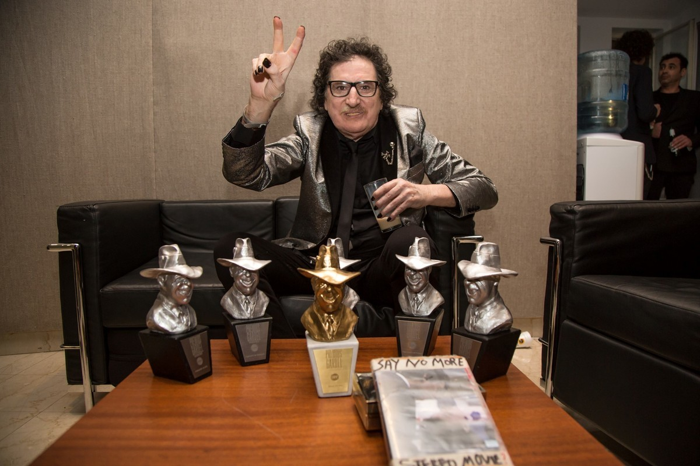

Premios y Nominaciones
Premios Grammy Latinos
- 2000: Mejor interpretación vocal rock masculina (Sweet Home Buenos Aires) - Nominado
- 2003: Mejor interpretación vocal rock solista (Influencia) - Nominado
- 2004: Mejor interpretación vocal rock solista (Rock and Roll YO) - Nominado
- 2009: A la excelencia musical - Ganador
Premios Carlos Gardel
- 1999: Mejor artista de rock (Demasiado ego) - Nominado
- 2003:
- Mejor álbum artista de rock (Influencia) - Ganador
- Mejor diseño de portada - Nominado
- Álbum del año (Influencia) - Ganador
- Realización del año - Ganador
- Realizador del año (Él mismo) - Ganador
- Canción del año («Tu vicio») - Ganador
- Mejor videoclip («Influencia») - Nominado
- 2004:
- Mejor álbum artista de rock (Rock and Roll YO) - Nominado
- Grabación del año («Asesíname») - Nominado
- Mejor videoclip - Nominado
- Mejor álbum artista de rock (Kill Gil) - Ganador
- Mejor diseño de portada - Ganador
- Álbum del año (Rándom) - Ganador
- Ingeniería de grabación - Ganador
- Producción del año - Ganador
- Mejor álbum artista masculino de rock (Rándom) - Ganador
- Mejor diseño de portada - Ganador
- Mejor videoclip («Lluvia») - Ganador
- Canción del año - Nominado
Otros premios y reconocimientos
- Konex de Platino (1985) como mejor instrumentista de rock de Argentina
- Ciudadano Ilustre de Buenos Aires (2010)
- Doctor Honoris Causa por la Universidad Nacional de General San Martín (2013)